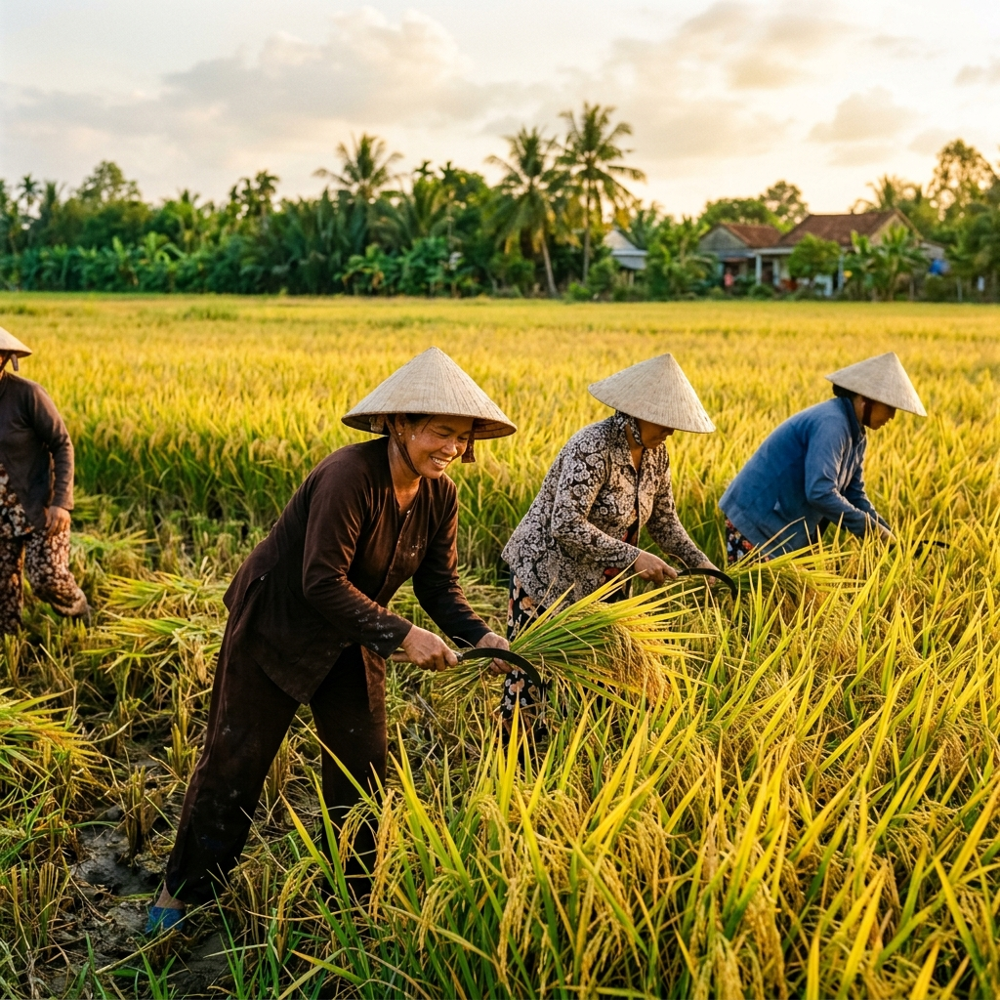
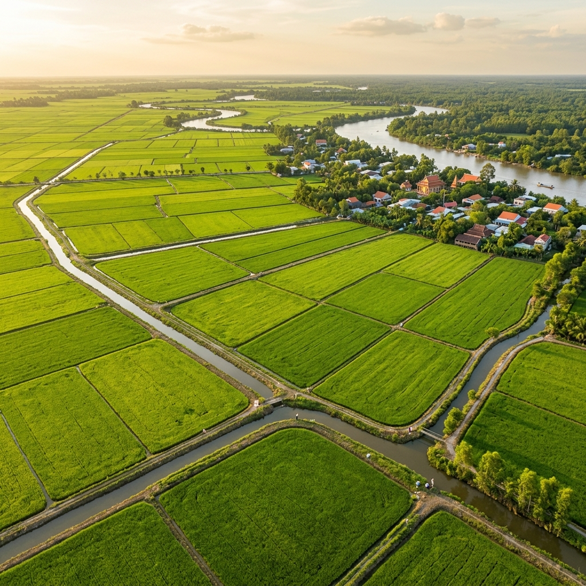

Dẻo thơm đặc trưng
Gạo Liên Hương
Cơm trắng mềm, dẻo thơm nổi bật, vị đậm và giữ mùi tốt sau khi nấu.
Dẻo thơmCơm trắngBán chạy
Xem chi tiết
100% tự nhiên - chuẩn ISO 22000:2018
Chúng tôi tự hào mang đến những sản phẩm nông nghiệp chất lượng cao, an toàn tuyệt đối. Từng hạt gạo, từng đặc sản đều trải qua quy trình kiểm soát khắt khe, đảm bảo đúng chuẩn xanh - sạch - tự nhiên cho mọi bữa ăn gia đình.
Giới thiệu
Cổ phần Sản xuất và Thương mại Nông Sản Việt tập trung vào nông sản sạch, tôn trọng hệ sinh thái canh tác và giữ trọn hương vị hạt gạo Việt.
Mỗi dòng sản phẩm được chọn theo tiêu chí rõ nguồn gốc, hương vị ổn định và quy trình kiểm soát từ vùng nguyên liệu, sơ chế, đóng gói đến phân phối cho gia đình, nhà hàng, bếp ăn và đối tác sỉ.

Vùng nguyên liệu Chọn lúa đúng độ chín để giữ hương thơm.
Xay xát - đóng gói Quy trình khép kín, sạch và đồng đều.
Kiểm định đầu ra Kiểm soát chất lượng trước khi xuất hàng.
Sản phẩm
Cơm trắng mềm, dẻo thơm nổi bật, vị đậm và giữ mùi tốt sau khi nấu.

Hạt thon dài, cơm mềm dẻo vừa, vị ngọt nhẹ và hương thơm dễ ăn.

Hạt dài đẹp, cơm ráo mềm, thơm thanh, phù hợp gia đình, nhà hàng và đại lý.
Quy trình
Nông Sản Việt xây dựng quy trình khép kín để mỗi dòng sản phẩm giữ được chất lượng ổn định, truy xuất rõ ràng và phù hợp tiêu chuẩn an toàn thực phẩm.


Máy móc
Các công đoạn làm sạch, tách tạp chất, phân loại hạt và đóng gói được hỗ trợ bằng máy móc để giảm sai lệch thủ công và bảo đảm sản phẩm đồng nhất.
Làm sạch nguyên liệu Loại bỏ bụi, vỏ trấu và tạp chất trước khi xử lý.
Phân loại hạt Chọn hạt đồng đều theo từng dòng sản phẩm.
Đóng gói Đóng gói linh hoạt cho bán lẻ, bếp ăn và đại lý.
Đối tác
Nông Sản Việt phát triển mạng lưới phân phối linh hoạt, sẵn sàng tư vấn sản phẩm, quy cách và chính sách phù hợp từng nhóm đối tác.
Cung cấp sản phẩm đóng gói tiện dùng cho bữa ăn hằng ngày và nhu cầu dinh dưỡng đa dạng.
Liên hệ tư vấnTư vấn dòng gạo phù hợp khẩu vị, định lượng và tần suất sử dụng của từng mô hình.
Nhận báo giáHỗ trợ quy cách, sản lượng và chính sách hợp tác cho đối tác bán sỉ trên toàn quốc.
Kết nối đại lýLiên hệ
Liên hệ trực tiếp Nông Sản Việt để được tư vấn dòng sản phẩm phù hợp, quy cách đóng gói, báo giá và nhu cầu phân phối.